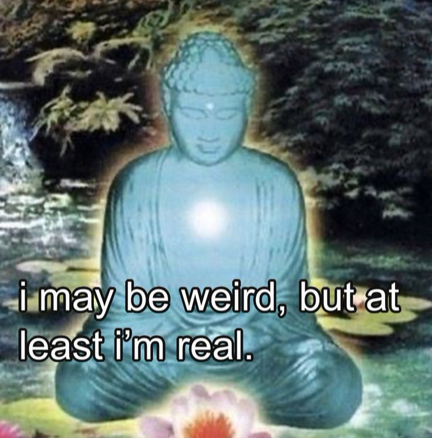

Bayangkan kamu baru saja mengambil foto pemandangan pasar malam yang penuh warna, atau mungkin kamu ingin mengunggah video potret senja yang di ambil dari kamera yang BUKAN IPON mu itu. Jarimu yang sebenarnya sudah di atas tombol post, tapi tiba-tiba pikiran itu muncul: "Duh, nanti dibilang alay nggak ya?" atau "Aduh, ini nggak estetik, nanti diciduk polisi senja." Akhirnya, foto itu berakhir di tempat sampah digital.
Fenomena ini nyata, kata 'alay' bukan lagi sekadar ejekan untuk gaya berpakaian yang mencolok atau cara typing yang rumit. Ia telah bermutasi menjadi sebuah polisi sosial yang tak kasat mata, sebuah standar tak tertulis yang mendikte bagaimana kita harus bersikap, berpakaian, hingga cara kita bersenang-senang. Kita sedang terjebak dalam krisis otentisitas, di mana ketakutan akan penghakiman massa di media sosial jauh lebih besar daripada keinginan kita untuk menjadi diri sendiri. Selamat datang di era di mana kita lebih memilih menjadi 'salinan yang sempurna' daripada menjadi 'orisinal yang dianggap norak'.
FOMO Estetik
Mengapa kita sampai di titik ini? Mengapa sebuah label sederhana seperti "alay" punya kekuatan sebesar itu untuk membatasi kebahagiaan kita? Jawabannya ada pada bagaimana lingkungan sosial kita mulai memaksakan standar tunggal tertentu yang harus dipatuhi hanya untuk di terima.
Saat ini, media sosial bukan lagi sekadar tempat berbagi, tapi panggung performa. Kita dipaksa percaya bahwa kebahagiaan itu harus punya "wajah" tertentu: minimalis, earth tone, Fancy, atau clean. Jika apa yang kita bagikan tidak sesuai dengan kurasi tersebut, kita dianggap tidak berkelas. Akhirnya, kita tidak lagi pergi ke suatu tempat untuk menikmati suasananya, tapi untuk memastikan kita punya "bahan" yang cukup untuk memenuhi standar sosial. Kita berhenti menjadi "kita", dan mulai menjadi salinan dari orang lain.
Elitisme di Balik Layar
Hal yang paling menyedihkan dari fenomena ini adalah ketika label "alay" digunakan sebagai senjata untuk merendahkan. Di sini, kita melihat adanya Elitisme Selera. Label "alay" sering kali digunakan sebagai alat filter untuk memisahkan "siapa yang punya selera mahal" dan "siapa yang norak". Ini adalah serangan halus bagi mereka yang mungkin tidak punya akses atau sumber daya untuk mengikuti tren terbaru yang dianggap cool. Akibatnya, mereka yang berekspresi apa adanya dengan sumber daya terbatas langsung dipojokkan dengan label "kampungan".
Lebih jauh lagi, ada Standar Ganda yang sangat nyata dalam pergaulan kita. Pernahkah kamu memperhatikan bagaimana perilaku yang sama bisa dinilai berbeda tergantung siapa yang melakukannya? Jika seorang selebriti atau orang kaya bertingkah konyol, memakai baju tabrak warna, atau mengunggah foto "berantakan", itu disebut "unik", "estetik", atau "eksperimental". Namun, jika orang biasa melakukan hal yang persis sama, label "alay" langsung disematkan tanpa ampun. Ini menunjukkan bahwa standar "keren" kita sebenarnya sangat bias dan tidak adil.
Ketakutan dibilang alay sebenarnya adalah Ketakutan Menjadi "Rakyat Jelata". Tanpa kita sadari, label ini telah menjadi bentuk diskriminasi kelas yang tersembunyi. Kita takut dianggap tidak berkelas, takut dianggap tidak punya "referensi", dan akhirnya kita memaksakan diri untuk mengikuti standar kelas tertentu yang sebenarnya mencekik kantong dan jiwa kita.
Ada sebuah ironi yang besar di sini: kita mengaku hidup di era kebebasan berekspresi, tapi kita sangat cepat menghakimi seseorang yang membawa elemen budaya tertentu entah itu musik, dialek, atau gaya berpakaian lokal, hanya karena itu tidak terlihat "chic" atau "fancy" di mata circle kita. Standar keren kita menjadi sangat sempit dan terlalu berkiblat pada estetika luar. Padahal, selera itu subjektif. Saat kita menghujat orang lain karena kontennya yang dianggap "norak", kita sebenarnya sedang memamerkan kesombongan kelas kita sendiri.
Matinya Autentisitas: Kita Menjadi Salinan yang Sempurna
Dampak paling ngeri dari ketakutan akan label "alay" adalah pelan-pelan kita membunuh jati diri sendiri. Demi validasi dan rasa aman agar tidak dikucilkan dari circle yang dianggap keren, banyak dari kita yang rela mematikan sisi kreatif dan unik dalam diri. Kita takut mencoba hal baru, takut terlihat berbeda, dan takut menjadi satu-satunya yang tidak mengikuti arus.
Padahal, hal-hal yang sekarang kita anggap "estetik" bisa jadi adalah hal-hal yang dulunya dianggap aneh. Namun, karena semua orang takut dibilang alay, kita terjebak dalam lingkaran yang membosankan. Kita yang terlanjur mengikuti gaya orang lain akhirnya merasa aneh sendiri terhadap diri kita karena mulai merasa tidak sesuai dengan siapa diri kita sebenarnya. Kita berhasil menjadi salinan yang sempurna, tapi kita kehilangan jiwa. Kita lebih sibuk membangun "etalase" daripada membangun "isi" rumahnya.
Rebut Kembali Hakmu untuk Menjadi "Dirimu Sendiri"
Hidup ini terlalu singkat untuk dihabiskan dengan menjadi kurator bagi penilaian orang lain. Kita harus berani berhenti menjadi pengawas bagi diri sendiri dan mulai menjadi pelaku hidup yang sesungguhnya.
Jangan biarkan ketakutan dibilang alay mencuri kebahagiaanmu. Jika kamu menyukai pemandangan pasar malam yang hiruk-pikuk itu, unggahlah. Jika kamu ingin memotret senja dengan kamera apa pun yang kamu punya meski bukan merek paling bergengsi, lakukanlah. Jika kamu bangga dengan budayamu yang dianggap "kampungan" oleh standar kelas tertentu, tunjukkanlah dengan kepala tegak.
Ingatlah satu hal: Lebih baik menjadi alay yang jujur dan bahagia, daripada menjadi keren tapi hidup dalam kepalsuan yang menyesakkan. Karena pada akhirnya, yang akan kita kenang di masa tua adalah momen kegembiraan yang tulus, bukan seberapa banyak orang yang setuju bahwa kita sudah cukup "oke" hari ini.
"Pada dasarnya semua orang emang hobi mencela, apalagi yang dirasa dibawahnya. Emang bener kata Baskara, semua orang hipokrit!"
Daftar Bacaan
- Liputan6: Apa Arti Alay? Fenomena Bahasa dan Gaya Hidup Remaja Indonesia
- Hai Grid: Sering Disebut tapi Nggak Tau Artinya, Ini Dia Asal-usul Istilah Alay
- NetPsychology: The Paradox of Authenticity on Social Media
- Medium (Jimoh Azeezat): The Death of Cringe Culture: Embracing Your Authentic Self
- The Norse Star: We May Be Cringe, But We Are Free